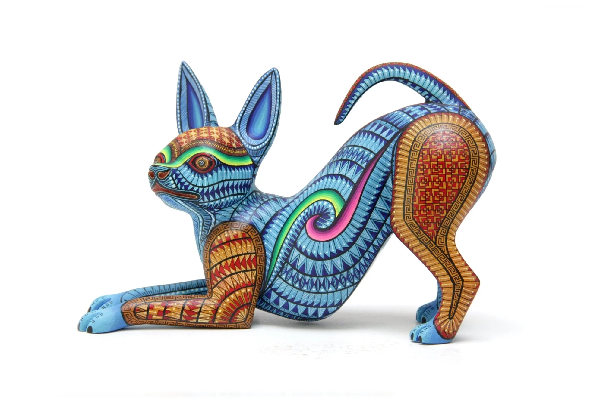

Alebrije Artesanal
Un auténtico alebrije de Oaxaca, tallado a mano y pintado con intrincados diseños tradicionales. Cada pieza es única y representa la rica tradición artesanal mexicana.
Detalles del Producto:
- Origen: Oaxaca, México
- Material: Madera tallada
- Técnica: Pintado a mano
- Dimensiones aproximadas: 25 cm x 15 cm
- Incluye certificado de autenticidad
$1,500 MXN
Agregar al Carrito